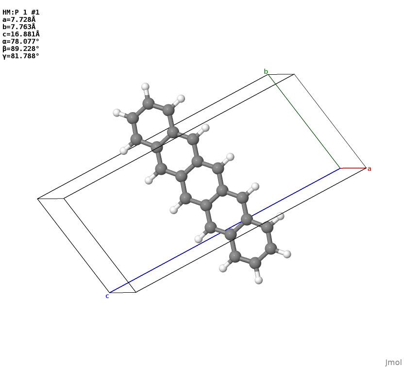

Installation¶
make sure
condaworks properlyclone the latest version (e.g.
v0.2) bygit clone https://github.com/caer200/ocelot_api.git
this yields a folder called
ocelot_api, create a new venv withconda env create -f venv/environment.yaml
or
conda create --name ocelot venv/spec-file.txt
run
python setup.py installthere
schema¶
A MolGraph is a graph consists of integer nodes (nodename) and edges connecting them.
For each node, there is an string attribute denotes the element.
A MolGraph can be partitioned into a set of FragmentGraph. A FragmentGraph contains
the information of joints at which fragmentation happened. The FragmentGraph is
used to represent different functional fragments commonly seen in functional organic
molecules.
One level above the MolGrap is the molecualr graph that contains
details of bonds and basic information about the electronic system.
This is the “molecule” drawn by chemists and
can be nicely described by the molecule class in rdkit. It should be noticed that
converting MolGraph to rdkit.mol is not trivial.
We use the method from xyz2mol by
Jensen Group.
With conformational information, a MolGraph/FragmentGraph
becomes a MolConformer/FragConformer that can
be uniquely defined by the Cartesian coordinates (xyz) of its atoms. Basically,
they are pymatgen.Molecule except for each site, there is a property siteid
that can be mapped to the nodes in MoleGraph.
Adding periodicity to a MolConformer yields a Config, which is just a
pymatgen.strcuture with no disordered sites. Disorder should be represented by
a set of weighted Config, as this API is used primarily for
handling organic molecular crystals in which the number of possible configurations is limited
by molecular structure.
Disorder¶
Let’s say you have a CIF file as x17059.cif. It looks like this in Jmol.

The problem here is the disordered sites at TIPGe groups,
if you look into the cif file you will find 2 disorder groups.
To extract no-disorder Config from the cif file, using
from ocelot.routines.disparser import DisParser
ciffile = 'x17059.cif'
dp = DisParser.from_ciffile(ciffile)
dp.to_configs(write_files=True) # writes conf_x.cif
Here the to_config method will write all possible configurations of a unit cell,
the disorder is treated to “max-entropy”. That is, there will be no correlation
between disordered sites sit at different asymmetric units
(even the same asymmetric unit, if they are far away from each other).
There are a lot of limitations come with this method, primarily from various
notations used in cif file generation. For more info see disorder_test
Bone Config¶
A challenging task in analyzing molecular crystal structure is to classify the packing pattern of molecular “backbones”. This can be done if we have a “clean” (no disorder, no fractional occupancies e.g. from solvent) configuration. The idea is first to strip the side groups:
from ocelot.schema.configuration import Config
config = Config.from_file('conf_1.cif')
bc, boneonly_pstructure, terminated_backbone_hmols = config.get_bone_config()
boneonly_pstructure.to('cif', 'boneonly.cif') # a backbone only configuration
which would gives you a backbone only configuration

…and the bone-only configuration bc can be used as input for an identifier
from ocelot.task.pkid import PackingIdentifier
pid = PackingIdentifier(bc)
packingd = pid.identify_heuristic()
print(packingd[0]['packing'])
# brickwork
Backbone and Sidechain¶
Usually, we work with the organic molecular having a conjugate backbone and a set
of side groups. This allows us to partition the molecule, either based on their
chemical structure (MolGraph) or their conformation (Conformer).
Take rubrene as an example, if you do not have conformational information you can start with SMILES
from rdkit.Chem import MolFromSmiles
from ocelot.schema.graph import MolGraph
smiles = 'c1ccc(cc1)c7c2ccccc2c(c3ccccc3)c8c(c4ccccc4)c5ccccc5c(c6ccccc6)c78'
rdmol = MolFromSmiles(smiles)
mg = MolGraph.from_rdmol(rdmol)
backbone, sidegroups = mg.partition_to_bone_frags('lgfr')
print(backbone)
for sg in sidegroups:
print(sg)
# BackboneGraph:; 6 C; 7 C; 8 C; 9 C; 10 C; 11 C; 12 C; 13 C; 20 C; 21 C; 28 C; 29 C; 30 C; 31 C; 32 C; 33 C; 34 C; 41 C
# SidechainGraph:; 0 C; 1 C; 2 C; 3 C; 4 C; 5 C
# SidechainGraph:; 14 C; 15 C; 16 C; 17 C; 18 C; 19 C
# SidechainGraph:; 22 C; 23 C; 24 C; 25 C; 26 C; 27 C
# SidechainGraph:; 35 C; 36 C; 37 C; 38 C; 39 C; 40 C
Here we first create an rdmol from smiles, then convert it to a MolGraph and
partition it into a BackboneGraph and a list of SidechainGraph. The lgfr in
partition method means “extract backbone based on the largest fused ring present
in the molecule”. For other schemes of extracting backbone, see API doc for MolGraph.
You can also start from a xyz file of rubrene:
from ocelot.schema.conformer import MolConformer
mc = MolConformer.from_file('rub.xyz')
bone_conformer, sccs, bg, scgs = mc.partition(coplane_cutoff=20)
print(bone_conformer)
for sc in sccs:
print(sc)
This would give the fragment conformers of this molecule, you can use coplane_cutoff
to control whether you want to include the phenol rings into the backbone.